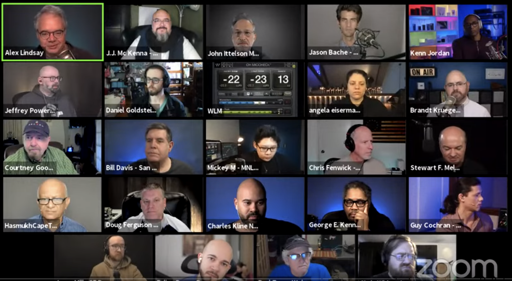
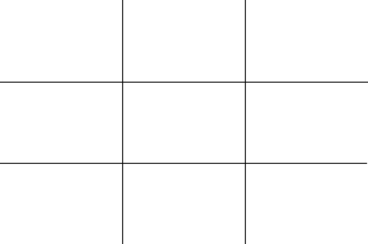

Take Your Zoom to a Higher Level
Sable Cantus
8/20/21
Welcome to Fall Flex Day 2021
Welcome back to Zoom
What makes someone look and sound good in zoom?
Let’s look at some examples from Alex Lindsey’s “Office Time” channel.

Our online video presentation is a tool that is used to help us get our ideas across to other people.
We show our professionalism when we present our best possible presence.
What makes a zoom call “good”?
- Good internet connection
- Clear and loud dedicated microphone
- Separate webcam properly positioned
- Clear lighting
- Tidy background or backdrop
What is a good internet connection?
- What challenges do we have?
Clear and loud dedicated microphone
- The built in laptop mic is usually not good enough to be heard clearly
- USB mics and headsets range in price
Separate webcam properly positioned
- Webcam should be on a stand and about eye level
- Your portrait should follow the “rule of thirds”
- Logitech Camera Settings app

Clear lighting
- avoid windows behind you
- avoid direct sunlight
- some light under the chin
Tidy background or backdrop
- move articles of clothing out of the “camera shot”
- position your desk to get a clean wall or bookcase
- include personal items if that suits you
- build or buy a green screen
Handouts are available on 3C Media
Questions?
Now YOU will be able to take your zoom to a higher level.
Thank you!